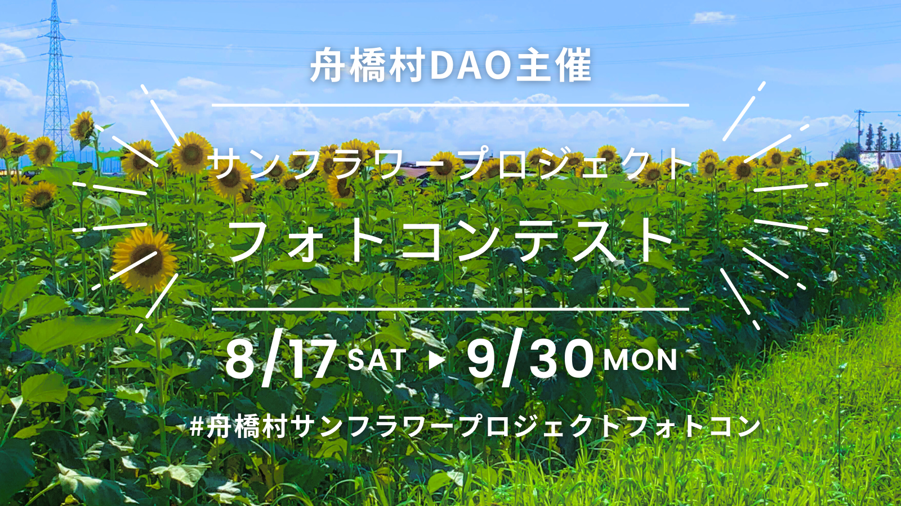

富山県舟橋村
ヒマワリで繋ぐ地域の輪
ヒマワリで繋ぐ地域の輪
〜サンフラワーフォトコンテスト〜
ねらい
ヒマワリを地域のシンボルにしながら、住民同士のつながりを深め、村外の人とも関わりが生まれる「関係人口」を増やす。
取り組み
サンフラワーフォトコンテストの開催に加え、ヒマワリ畑づくり（種まき・育成）を住民と村外参加者で共同実施。SNSやコミュニティで作品投稿・情報発信を行い、誰でも参加しやすい形で巻き込みを促進。
種まきイベントには約130人が参加！地域内外が一緒に畑づくりに取り組む交流が生まれました。